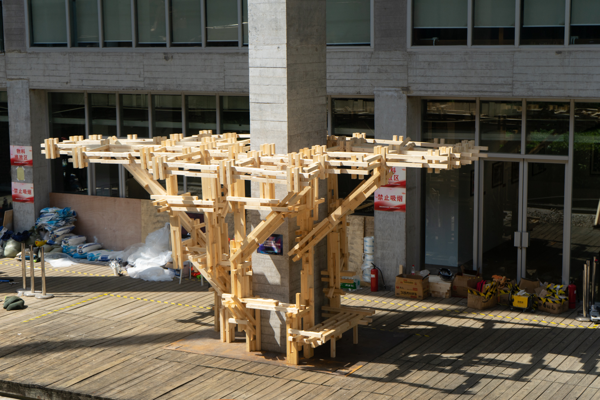
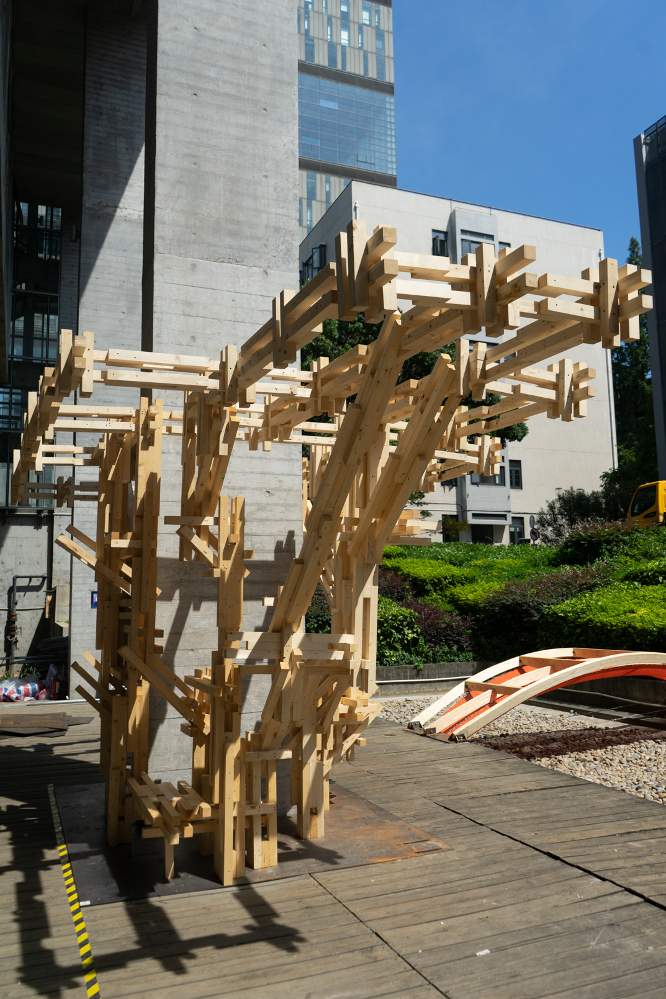
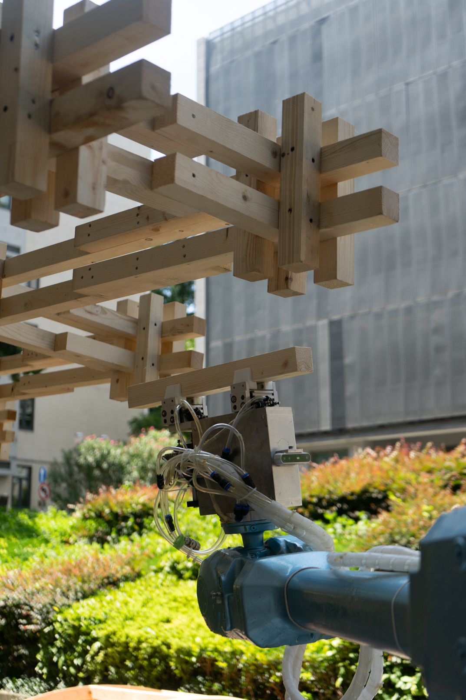
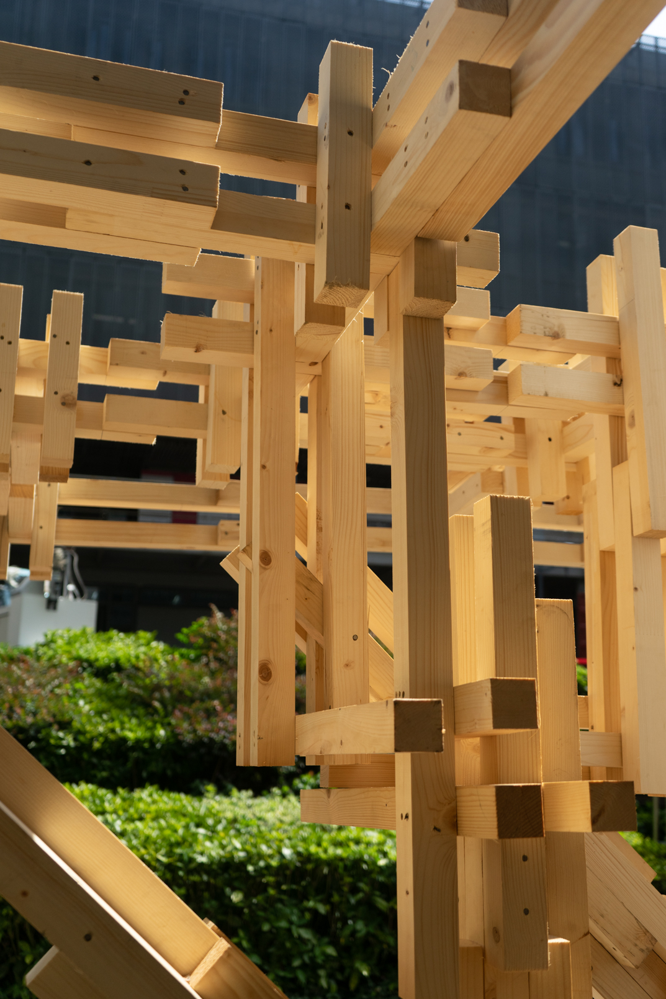
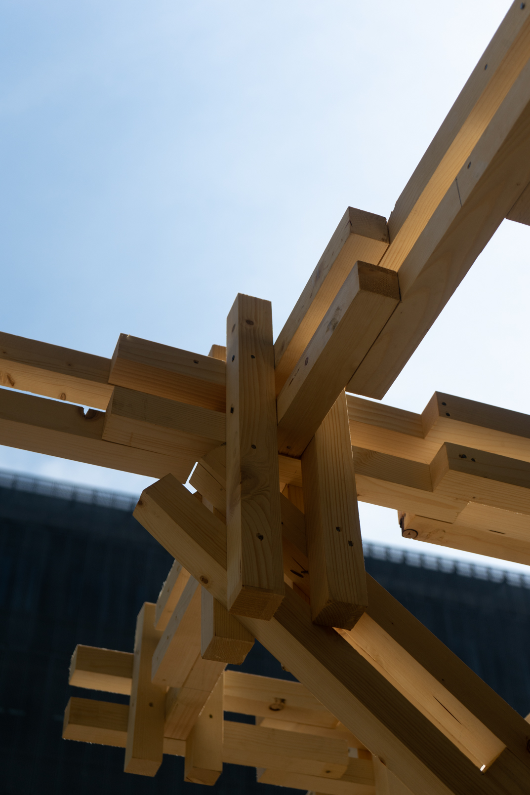

As a participant in the workshop, I had a hand throughout the code debugging, the on-campus robotic fabrication and the video-making process. To be architecturally, discrete was the conceptual idea of this ultra-modern timber structure. Visual recognition and caterpillar track allow the in-situ robot platform to move freely around the site and fabricate quickly in few days.





--- Growing, Growing, Brighter Everyday ! ---